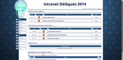
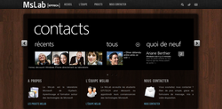
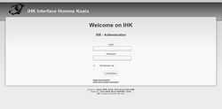
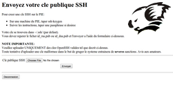
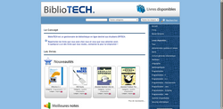
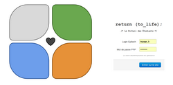
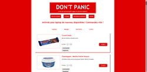
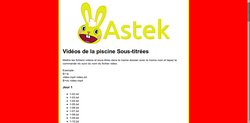

| Intranet Délégués |
 |
An intranet for all students to contact their representatives and track issues (more than 10 000 lines of code).
Events orginizer : Conferences (~50 ppl), Year Group Photo (~250 ppl), and more.
Tickets, To-do-list, Polls, Reports, News, ...
|
| MsLab |
 |
Epitech Microsoft Laboratory.
|
| IHK |
 |
IHK ("Interface Homme Koalas") is an educational intranet used by the group of assistants "Koalas" ("Kind Of Advanced Langage Assistants").
|
| Koalas-Rendu |
 |
Koalas-rendus is the system used by koalas to manage students authentification on their SCM repositories.
|
| BiblioTECH |
 |
Book-sharing website between laboratories and students in Epitech. Hosted in the Koalab and supported by koalas. |
return (to_life);
|
 |
Internal School Newspaper. By students, for students. Freedom of speech. |
| Don't Panic! |
 |
Provide useful products for sale to students for intensive study periods, and organize activities and events around the novel H2G2 and Anglo-Saxon culture in general. |
| Astek.Paysdu42.fr |
 |
C Intense period videos subtitled. |